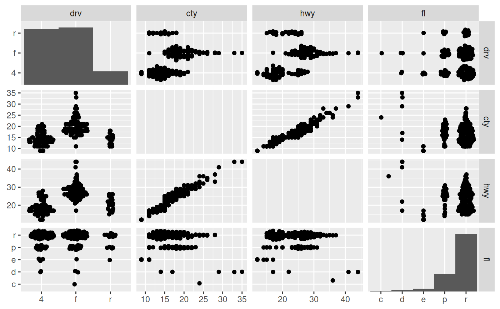
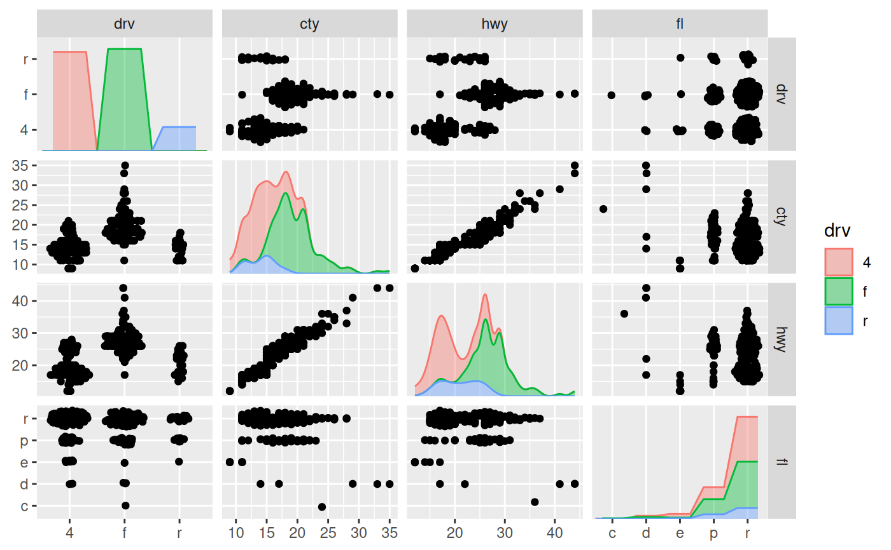
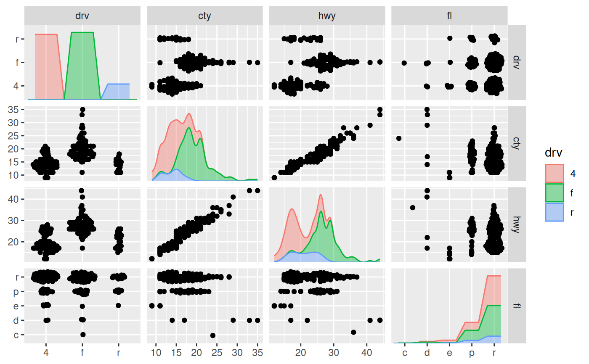

A distribution geoms that fills the panel and works with discrete and continuous data
Source:R/autodensity.R, R/autohistogram.R
geom_autohistogram.RdThese versions of the histogram and density geoms have been designed
specifically for diagonal plotting with facet_matrix(). They differ from
ggplot2::geom_histogram() and ggplot2::geom_density() in that they
defaults to mapping x and y to .panel_x and .panel_y respectively,
they ignore the y scale of the panel and fills it out, and they work for both
continuous and discrete x scales.
Usage
geom_autodensity(
mapping = NULL,
data = NULL,
stat = "autodensity",
position = "floatstack",
...,
bw = "nrd0",
adjust = 1,
kernel = "gaussian",
n = 512,
trim = FALSE,
na.rm = FALSE,
show.legend = NA,
inherit.aes = TRUE,
outline.type = "upper"
)
geom_autohistogram(
mapping = NULL,
data = NULL,
stat = "autobin",
position = "floatstack",
...,
bins = NULL,
na.rm = FALSE,
show.legend = NA,
inherit.aes = TRUE
)Arguments
- mapping
Set of aesthetic mappings created by
aes(). If specified andinherit.aes = TRUE(the default), it is combined with the default mapping at the top level of the plot. You must supplymappingif there is no plot mapping.- data
The data to be displayed in this layer. There are three options:
If
NULL, the default, the data is inherited from the plot data as specified in the call toggplot().A
data.frame, or other object, will override the plot data. All objects will be fortified to produce a data frame. Seefortify()for which variables will be created.A
functionwill be called with a single argument, the plot data. The return value must be adata.frame, and will be used as the layer data. Afunctioncan be created from aformula(e.g.~ head(.x, 10)).- stat
The statistical transformation to use on the data for this layer. When using a
geom_*()function to construct a layer, thestatargument can be used the override the default coupling between geoms and stats. Thestatargument accepts the following:A
Statggproto subclass, for exampleStatCount.A string naming the stat. To give the stat as a string, strip the function name of the
stat_prefix. For example, to usestat_count(), give the stat as"count".For more information and other ways to specify the stat, see the layer stat documentation.
- position
A position adjustment to use on the data for this layer. This can be used in various ways, including to prevent overplotting and improving the display. The
positionargument accepts the following:The result of calling a position function, such as
position_jitter(). This method allows for passing extra arguments to the position.A string naming the position adjustment. To give the position as a string, strip the function name of the
position_prefix. For example, to useposition_jitter(), give the position as"jitter".For more information and other ways to specify the position, see the layer position documentation.
- ...
Other arguments passed on to
layer()'sparamsargument. These arguments broadly fall into one of 4 categories below. Notably, further arguments to thepositionargument, or aesthetics that are required can not be passed through.... Unknown arguments that are not part of the 4 categories below are ignored.Static aesthetics that are not mapped to a scale, but are at a fixed value and apply to the layer as a whole. For example,
colour = "red"orlinewidth = 3. The geom's documentation has an Aesthetics section that lists the available options. The 'required' aesthetics cannot be passed on to theparams. Please note that while passing unmapped aesthetics as vectors is technically possible, the order and required length is not guaranteed to be parallel to the input data.When constructing a layer using a
stat_*()function, the...argument can be used to pass on parameters to thegeompart of the layer. An example of this isstat_density(geom = "area", outline.type = "both"). The geom's documentation lists which parameters it can accept.Inversely, when constructing a layer using a
geom_*()function, the...argument can be used to pass on parameters to thestatpart of the layer. An example of this isgeom_area(stat = "density", adjust = 0.5). The stat's documentation lists which parameters it can accept.The
key_glyphargument oflayer()may also be passed on through.... This can be one of the functions described as key glyphs, to change the display of the layer in the legend.
- bw
The smoothing bandwidth to be used. If numeric, the standard deviation of the smoothing kernel. If character, a rule to choose the bandwidth, as listed in
stats::bw.nrd(). Note that automatic calculation of the bandwidth does not take weights into account.- adjust
A multiplicate bandwidth adjustment. This makes it possible to adjust the bandwidth while still using the a bandwidth estimator. For example,
adjust = 1/2means use half of the default bandwidth.- kernel
Kernel. See list of available kernels in
density().- n
number of equally spaced points at which the density is to be estimated, should be a power of two, see
density()for details- trim
If
FALSE, the default, each density is computed on the full range of the data. IfTRUE, each density is computed over the range of that group: this typically means the estimated x values will not line-up, and hence you won't be able to stack density values. This parameter only matters if you are displaying multiple densities in one plot or if you are manually adjusting the scale limits.- na.rm
If
FALSE, the default, missing values are removed with a warning. IfTRUE, missing values are silently removed.- show.legend
logical. Should this layer be included in the legends?
NA, the default, includes if any aesthetics are mapped.FALSEnever includes, andTRUEalways includes. It can also be a named logical vector to finely select the aesthetics to display.- inherit.aes
If
FALSE, overrides the default aesthetics, rather than combining with them. This is most useful for helper functions that define both data and aesthetics and shouldn't inherit behaviour from the default plot specification, e.g.borders().- outline.type
Type of the outline of the area;
"both"draws both the upper and lower lines,"upper"/"lower"draws the respective lines only."full"draws a closed polygon around the area.- bins
Number of bins. Overridden by
binwidth. Defaults to 30.
See also
facet_matrix for creating matrix grids
Examples
# A matrix plot with a mix of discrete and continuous variables
p <- ggplot(mpg) +
geom_autopoint() +
facet_matrix(vars(drv:fl), layer.diag = 2, grid.y.diag = FALSE)
p
# Diagonal histograms
p + geom_autohistogram()

# Diagonal density distributions
p + geom_autodensity()
 # You can use them like regular layers with groupings etc
p + geom_autodensity(aes(colour = drv, fill = drv),
alpha = 0.4)

# You can use them like regular layers with groupings etc
p + geom_autodensity(aes(colour = drv, fill = drv),
alpha = 0.4)
